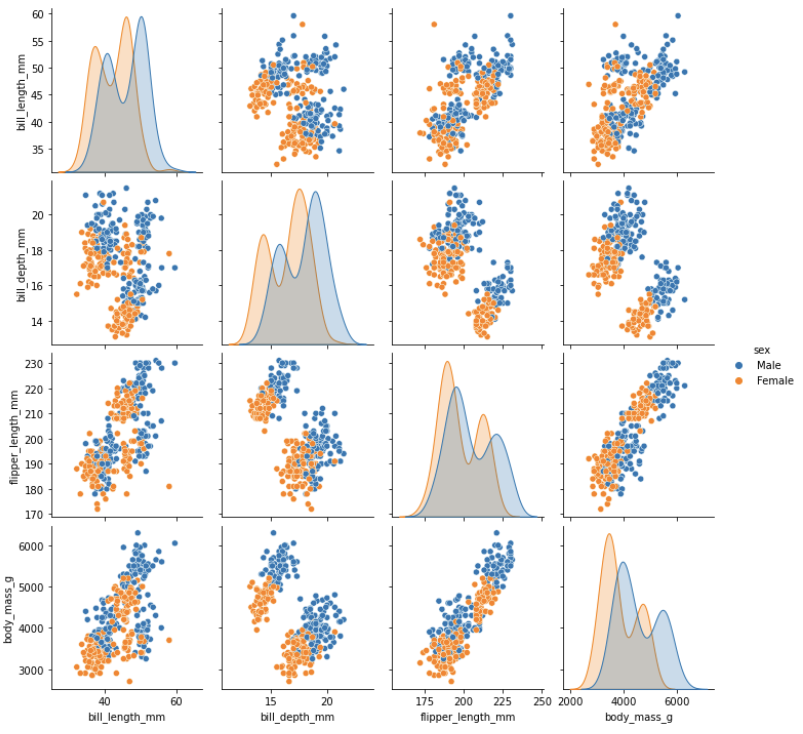
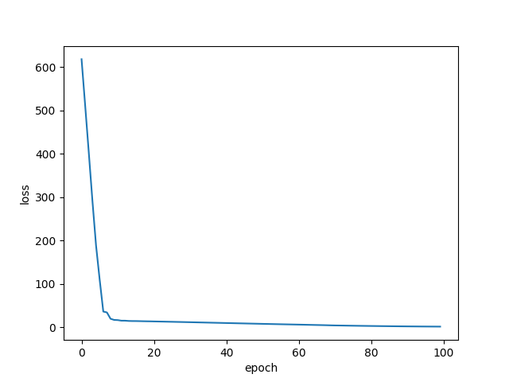
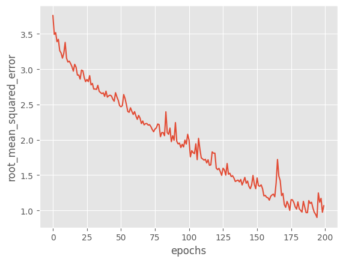
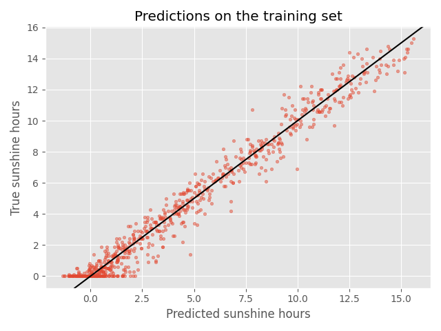
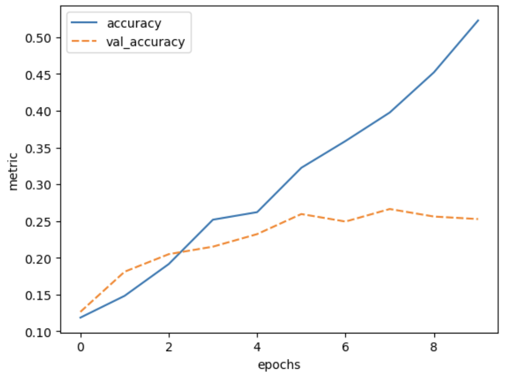
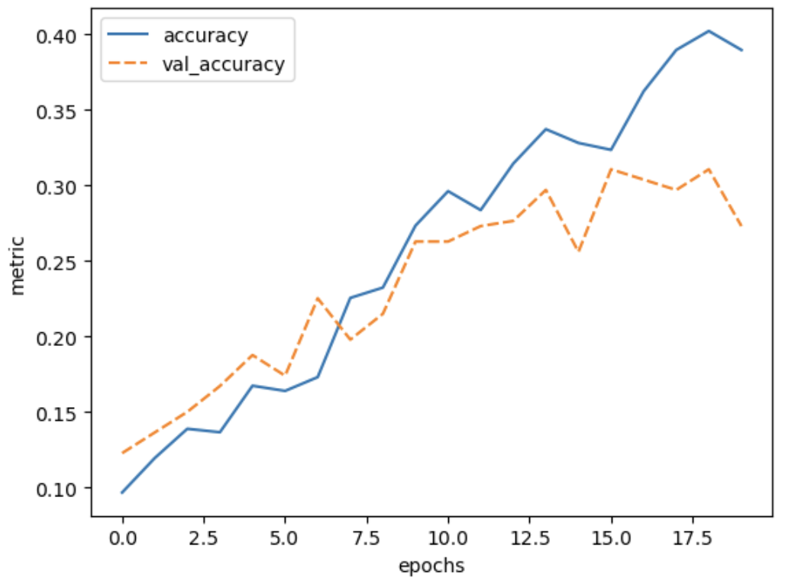

Image 1 of 1: ‘An infographic showing the relation of artificial intelligence, machine learning, and deep learning. Deep learning is a specific subset of machine learning algorithms. Machine learning is one of the approaches to artificial intelligence.’
Figure 2
Image 1 of 1: ‘A diagram of a single artificial neuron combining inputs and weights using an activation function.’
Figure 3
Image 1 of 1: ‘Plot of the sigmoid function’
Figure 4
Image 1 of 1: ‘Plot of the ReLU function’
Figure 5
Image 1 of 1: ‘Plot of the Identity function’
Figure 6
Image 1 of 1: ‘A diagram of a three layer neural network with an input layer, one hidden layer, and an output layer.’
Image 1 of 1: ‘A diagram of a neural network with 2 inputs, 2 hidden layer neurons, and 1 output.’
\(b_i\) denotes the bias term of
that specific neuron
Figure 8
Image 1 of 1: ‘An example of a deep neural network’
A visual representation of a deep neural
network used to detect pedestrians in images. There are too
many neurons to draw all of them, so each layer is represented by a
panel, with values indicating how many neurons are in each dimension of
the layer. Note that this model has 3-dimensional layers instead of the
1-dimensional layers that we introduced before. The input (left most)
layer of the network is an image of 448 x 448 pixels and 3 RGB channels.
The final (right most) layer of the network outputs a zero or one to
determine if the input data belongs to the class of data we are
interested in. The output of the previous layer is the input to the next
layer. Note that the color coding refers to different layer types that
will be introduced one by one as we proceed in this lesson.
Figure 9
Image 1 of 1: ‘As a result of the optimization process, the different layers of a neural network tend to learn increasingly abstract representations of the input data.’
As a result of the optimization process, the
different layers of a neural network tend to learn increasingly abstract
representations of the input data.
Figure 10
Image 1 of 1: ‘Line plot comparing squared error loss function with the Huber loss function where delta = 1, showing the cost of prediction error of both functions equal where y_true - y_pred is between -1 and 1, then rising linearly with the Huber loss function as y_true diverges further from y_pred, as opposed to expontentially for the squared error function.’
Figure 11
Image 1 of 1: ‘A graph showing an exponentially decreasing loss over the first 1500 epochs of training an example network.’
Image 1 of 1: ‘Illustration of the three species of penguins found in the Palmer Archipelago, Antarctica: Chinstrap, Gentoo and Adele’
Artwork by @allison_horst
Figure 2
Image 1 of 1: ‘Illustration of how the beak dimensions were measured. In the raw data, bill dimensions are recorded as "culmen length" and "culmen depth". The culmen is the dorsal ridge atop the bill.’
Artwork by @allison_horst
Figure 3
Image 1 of 1: ‘Grid of scatter plots and histograms comparing observed values of the four physicial attributes (features) measured in the penguins sampled. Scatter plots illustrate the distribution of values observed for each pair of features. On the diagonal, where one feature would be compared with itself, histograms are displayed that show the distribution of values observed for that feature, coloured according to the species of the individual sampled. The pair plot shows distinct but overlapping clusters of data points representing the different species, with no pair of features providing a clean separation of clusters on its own.’
Figure 4
Image 1 of 1: ‘Grid of scatter plots and histograms comparing observed values of the four physicial attributes (features) measured in the penguins sampled, with data points coloured according to the sex of the individual sampled. The pair plot shows similarly-shaped distribution of values observed for each feature in male and female penguins, with the distribution of measurements for females skewed towards smaller values.’

Figure 5
Image 1 of 1: ‘A directed graph showing the three layers of the neural network connected by arrows. First layer is of type InputLayer. Second layer is of type Dense with a relu activation. The third layer is also of type Dense, with a softmax activation. The input and output shapes of every layer are also mentioned. Only the second and third layers contain trainable parameters.’
Output of keras.utils.plot_model()
function
Figure 6
Image 1 of 1: ‘Plot of the Cross Entropy loss, showing a sharp decrease in the first around 10 epochs, and converging at a low value afterwards.’

Figure 7
Image 1 of 1: ‘Very jittery training curve with the loss value jumping back and forth between 2 and 4. The range of the y-axis is from 2 to 4, whereas in the previous training curve it was from 0 to 2. The loss seems to decrease a litle bit, but not as much as compared to the previous plot where it dropped to almost 0. The minimum loss in the end is somewhere around 2.’
(optional) Something went wrong here during training. What could be
the problem, and how do you see that in the training curve? Also compare
the range on the y-axis with the previous training curve.
Figure 8
Image 1 of 1: ‘Confusion matrix of the test set with high accuracy for Adelie and Gentoo classification and no correctly predicted Chinstrap’
Image 1 of 1: ‘18 European locations in the weather prediction dataset distributed across Austria, France, Germany, Hungary, Italy, the Netherlands, Norway, Slovenia, Sweden, Switzerland, and the United Kingdom.’
European locations in the weather prediction
dataset
Figure 2
Image 1 of 1: ‘Plot of the loss as a function of the weights. Through gradient descent the global loss minimum is found’
Figure 3
Image 1 of 1: ‘Plot of the RMSE over epochs for the trained model that shows a decreasing error metric.’

Figure 4
Image 1 of 1: ‘Scatter plot between predictions and true sunshine hours in Basel on the training set showing a concise spread’

Figure 5
Image 1 of 1: ‘Scatter plot between predictions and true sunshine hours in Basel on the test set showing a wide spread’
Figure 6
Image 1 of 1: ‘Scatter plot of predicted vs true sunshine hours in Basel for the test set where today's sunshine hours is considered as the true sunshine hours for tomorrow’
Figure 7
Image 1 of 1: ‘Plot of RMSE vs epochs for the training set and the validation set which depicts a divergence between the two around 10 epochs.’
Figure 8
Image 1 of 1: ‘Plot of RMSE vs epochs for the training set and the validation set with similar performance across the two sets. RMSE for the validation set diverges from RMSE for the training set after around 10 epochs but the difference in RMSE values for the two sets is much smaller than in the previous example.’
Figure 9
Image 1 of 1: ‘Plot of RMSE vs epochs for the training set and the validation set displaying similar performance across the two sets. RMSE for the validation set diverges slowly from RMSE for the training set after approximately 8 epochs, with RMSE for the validation set dropping more slowly.’
Figure 10
Image 1 of 1: ‘Plot of error vs epochs for the training set and the validation set displaying similar performance across the two sets. RMSE for the validation set drops more than for the training set at first, tracks the training error until approximately 50 epochs, then begins to gradually increase while error for the training set continues to gradually decrease.’
Figure 11
Image 1 of 1: ‘Scatter plot between predictions and true sunshine hours for Basel on the test set, showing a loose positive correlation.’
Figure 12
Image 1 of 1: ‘Scatterplot of predictions and true number of sunshine hours for all cities, showing many data points distributed in a very loose positive correlation.’
Figure 13
Image 1 of 1: ‘Tensorboard graphical user interface.’
Which will show an interface that looks something like this:
Image 1 of 1: ‘A 5 by 5 grid of 25 sample images from the dollar street 10 data-set. Each image is labelled with a category, for example: 'street sign' or 'soap dispenser'.’
Sample images from the Dollar Street 10 dataset.
Each image is labelled with a category, for example: ‘street sign’ or
‘soap dispenser’
Figure 2
Image 1 of 1: ‘Example of a convolution matrix calculation’
Figure 3
Image 1 of 1: ‘Convolution example on an image of a cat to extract features’
Figure 4
Image 1 of 1: ‘Plot of training accuracy and validation accuracy vs epochs for the trained model, showing training accuracy incrasing consistently by approximately 0.1 for each epoch while validation accuracy remains steady, with only slight fluctuations around 0.25.’
Figure 5
Image 1 of 1: ‘Plot of training loss and validation loss vs epochs for the trained model, showing training loss steadily decreasing while validation loss remains steady before increasing after the sixth epoch.’
Figure 6
Image 1 of 1: ‘Plot of training accuracy and validation accuracy vs epochs for a model with only dense layers, showing training accuracy increasing to approximately 0.22 and validation accuracy plateauing around 0.18. Both values show relatively large fluctations as training progresses.’
Figure 7
Image 1 of 1: ‘Plot of training accuracy and validation accuracy vs epochs for the trained model, showing training accuracy increasing steadily by approximately 0.04 per epoch up to around 0.55 while validation accuracy increases before plateauing around 0.25.’

Figure 8
Image 1 of 1: ‘A sketch of a neural network with and without dropout’
Figure 9
Image 1 of 1: ‘Plot of training accuracy and validation accuracy vs epochs for the trained model, showing both values increasing before they diverge after around 10 epochs, with training accuracy reaching approximately 0.4 while validation accuracy plateaus around 0.3’

Figure 10
Image 1 of 1: ‘Plot of vall loss vs dropout rate used in the model. The val loss varies between 2.3 and 2.0 and is lowest with a dropout_rate of 0.9’
Image 1 of 1: ‘Training history for training the pre-trained-model. The training accuracy slowly raises from 0.2 to 0.9 in 20 epochs. The validation accuracy starts higher at 0.25, but reaches a plateau around 0.64’
The final validation accuracy reaches 64%, this is a huge improvement
over 30% accuracy we reached with the simple convolutional neural
network that we build from scratch in the previous episode.


{kind=link}


![Grid of scatter plots and histograms comparing observed values of the four physicial attributes (features) measured in the penguins sampled. Scatter plots illustrate the distribution of values observed for each pair of features. On the diagonal, where one feature would be compared with itself, histograms are displayed that show the distribution of values observed for that feature, coloured according to the species of the individual sampled. The pair plot shows distinct but overlapping clusters of data points representing the different species, with no pair of features providing a clean separation of clusters on its own.](../fig/pairplot.png "Pair Plot")
 function")


 The final validation accuracy reaches 64%, this is a huge improvement
over 30% accuracy we reached with the simple convolutional neural
network that we build from scratch in the previous episode.
The final validation accuracy reaches 64%, this is a huge improvement
over 30% accuracy we reached with the simple convolutional neural
network that we build from scratch in the previous episode.